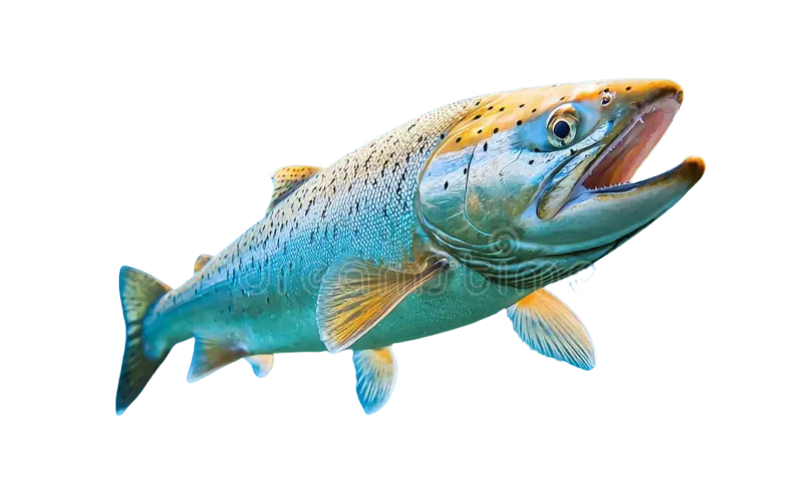

Optimiza tus procesos con IA integrada

En AquaChile impulsamos el talento de nuestra gente a través de procesos de selección modernos, ágiles y cercanos. Mediante la automatización inteligente, optimizamos cada etapa de la evaluación psicolaboral para conectar con las personas con mayor precisión, transparencia y la pasión por la excelencia que nos caracteriza.
Accede directamente al formulario oficial para iniciar el proceso de evaluación psicolaboral.
Haz clic acá para realizar el formulario